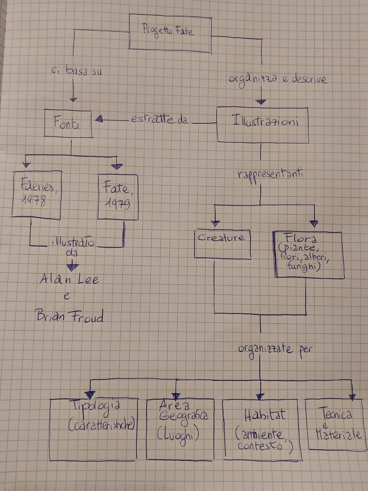
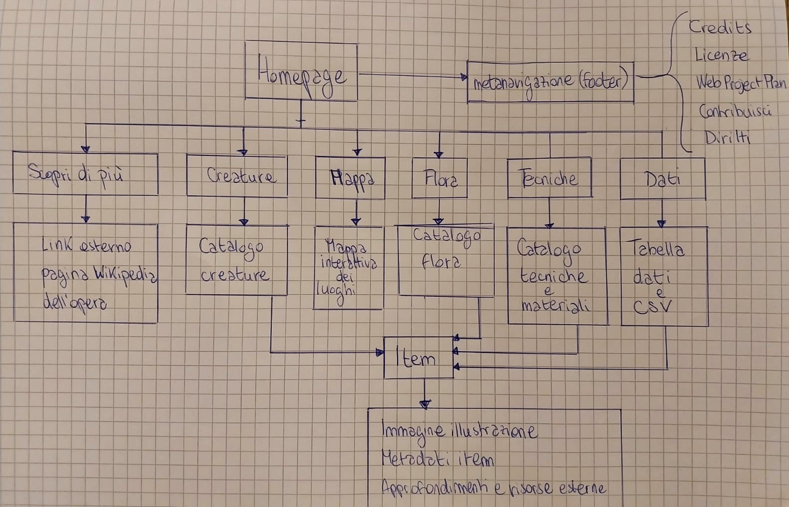
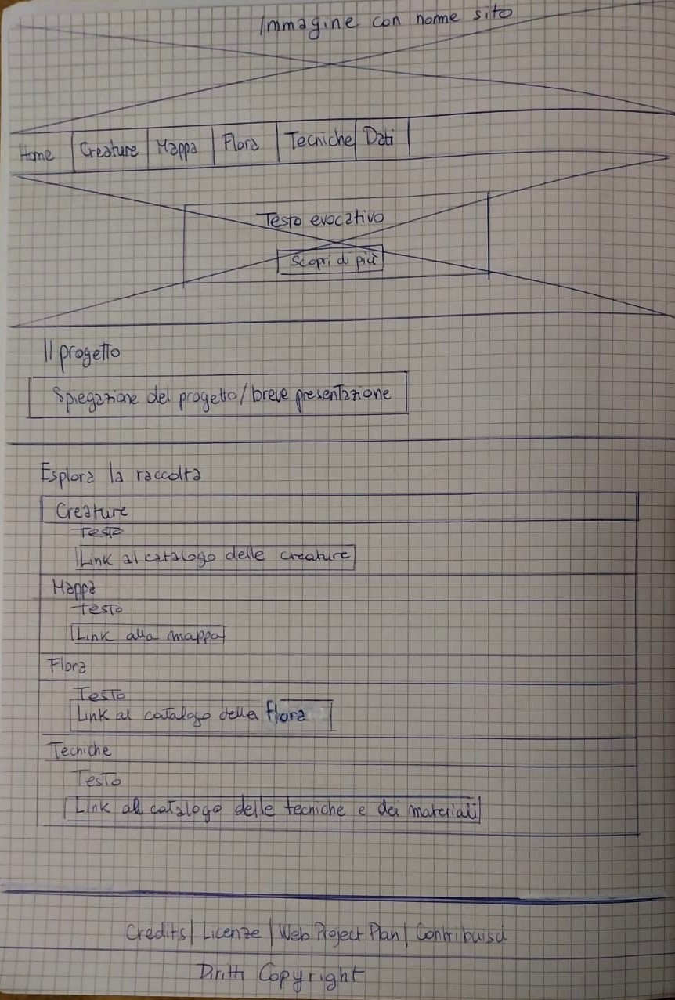
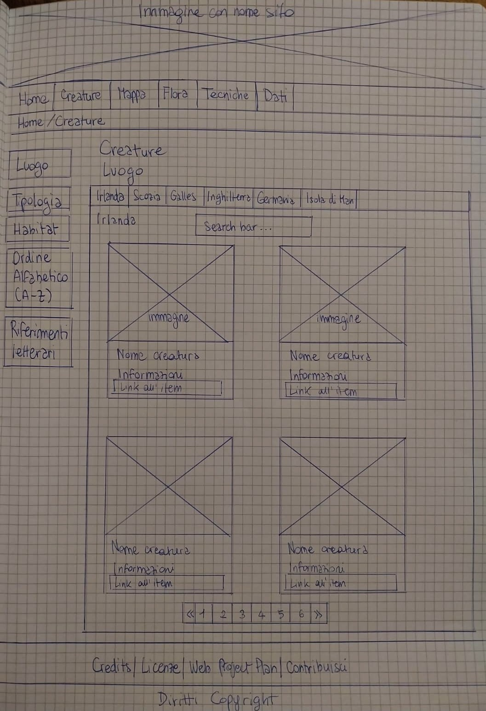
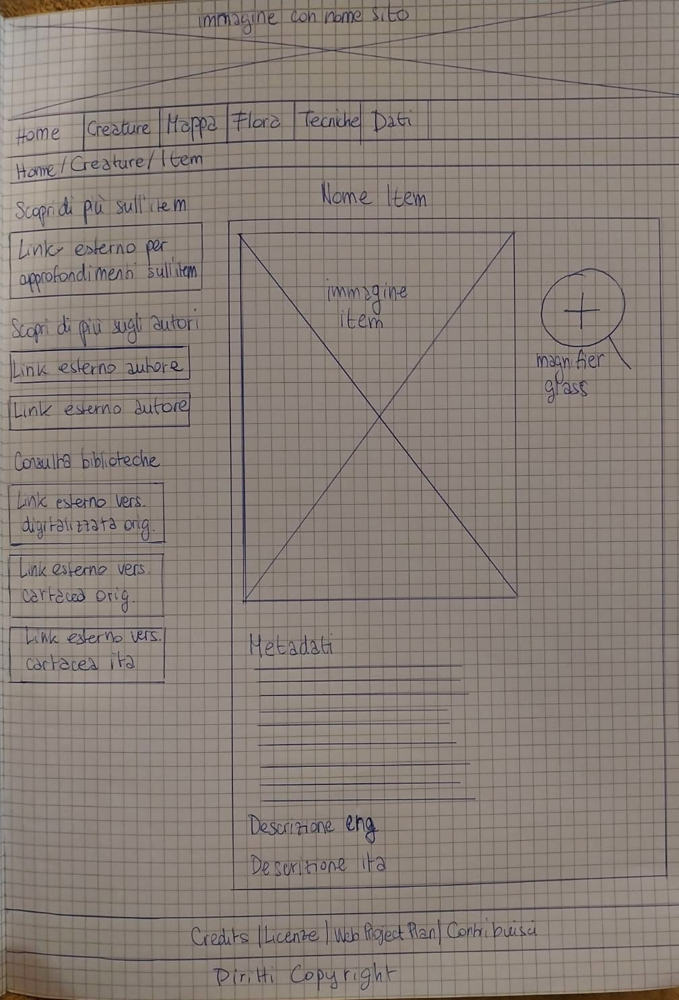
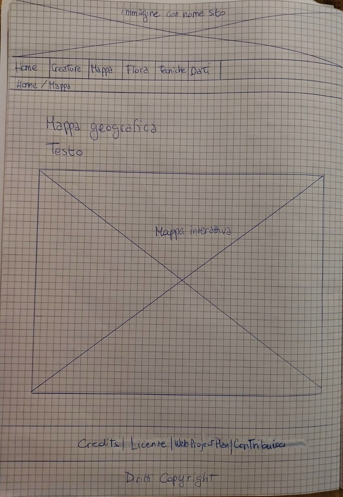
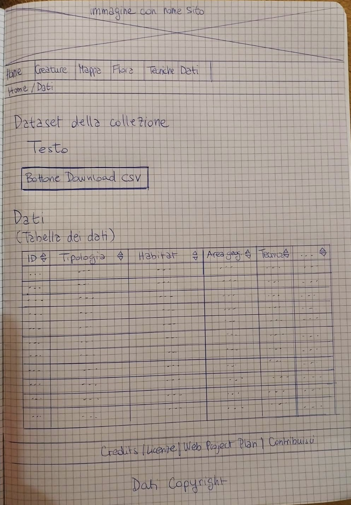

Web Project Plan
1. Idea (Abstract)
Il progetto consiste nella realizzazione di una collezione digitale interattiva orientata alla catalogazione e valorizzazione delle 185 illustrazioni contenute nel volume Faeries (1978) di Alan Lee e Brian Froud. L'obiettivo principale è offrire una tassonomia strutturata che metta in relazione le creature del folklore celtico e germanico con i rispettivi habitat, aree geografiche di origine, riferimenti letterari e tecniche pittoriche impiegate. La piattaforma consente un'esplorazione fluida attraverso molteplici percorsi di browsing (tabelle dinamiche, mappe interattive e filtri tematici) ed è rivolta ad appassionati di illustrazione, studenti e ricercatori. Realizzato con HTML5, CSS3 e JavaScript, il sito adotta metadati Dublin Core, descrizioni bilingue e un dataset in formato aperto scaricabile, garantendo un design responsive e accessibile per la consultazione multipiattaforma.
2. Brief
Finalità: Lo scopo principale del progetto è sviluppare una risorsa digitale che funga da archivio e catalogo strutturato per la consultazione del patrimonio illustrativo del celebre volume Faeries (1978) di Alan Lee e Brian Froud. Si intende valorizzare l'immaginario artistico, letterario e mitologico dell'opera attraverso una tassonomia rigorosa.
il sito mira a catalogare in modo esaustivo tutte le 185 illustrazioni del libro, estendendo la classificazione alle sezioni dedicate alle creature leggendarie, alla flora magica e alle tecniche di disegno, offrendo così uno strumento di studio completo.
Pubblico di riferimento:
- Utenti generali e appassionati: utenza attratta dall'impatto visivo e narrativo delle illustrazioni, che accede per un'esplorazione libera, geografica e tematica dei contenuti.
- Ricercatori, illustratori e studenti: utenti con esigenze informative avanzate, interessati all'analisi iconografica, al confronto filologico dei testi (bilingui) e al riuso dei dati strutturati della collezione.
Accesso: Tutti gli utenti accedono liberamente ai contenuti pubblici di base attraverso una navigazione intuitiva poiché si basa su standard consolidati: menù e breadcrumbs in posizione fissa, etichette chiare, feedback visivo costante della pagina attiva ed elementi d'interazione familiari (tab e accordion), azzerando lo sforzo cognitivo dell'utente. La comunicazione non si affida esclusivamente al testo, ma sfrutta una forte integrazione mediale che unisce descrizioni critiche bilingue (inglese e italiano), immagini ad alta risoluzione delle tavole originali e widget interattivi (mappe geografiche e tool di ingrandimento per l'analisi ravvicinata dei dettagli artistici). Il design della risorsa è progettato per essere multipiattaforma, compatibile con diversi dispositivi (PC, tablet e smartphone). Inoltre, gli utenti possono contribuire attivamente all'espansione e al miglioramento del progetto andando ad esplorare la sezione dedicata nel footer.
Contenuti e Dati: Le risorse consultate per l'ideazione e la creazione del sito provengono principalmente dall'edizione digitalizzata liberamente consultabile online su Internet Archive, dalla versione cartacea dell'edizione italiana del libro in possesso del creatore della risorsa (Fate, Rizzoli, 1979), l'applicazione web Google My Maps, Wikipedia e l'OPAC SBN (Catalogo collettivo delle biblioteche del Servizio Bibliotecario Nazionale). Come contenuti nuovi creati ex novo nel progetto figurano la struttura, la codifica e l'impaginazione responsive delle pagine HTML e del foglio di stile CSS, la definizione dello schema tassonomico delle schede degli item, la creazione del dataset strutturato in formato CSV per l'ordinamento e il download dei dati, lo sviluppo delle funzionalità interattive in JavaScript (lente d'ingrandimento e tabella dei dati filtrabile) e la stesura integrale del Web Project Plan.
3. Benchmark
Analisi di mercato:
-
Fionn Folklore Database: Raccolta digitale incentrata sulla catalogazione e geolocalizzazione di storie e testi della tradizione orale legate a Fionn mac Cumhaill (Finn McCool) e ai Fianna.
Punti di forza: Ottimo punto di riferimento per l'organizzazione territoriale del mito.
Limiti: Si concentra prevalentemente sul testo d'archivio e sul racconto orale, lasciando in secondo piano la valorizzazione artistica e iconografica del dettaglio visivo.
-
The William Blake Archive: Archivio online gratuito e open access dedicato all'opera visiva e letteraria di William Blake.
Punti di forza riusati: Eccelle nella fedeltà filologica, nella qualità ad alta risoluzione delle immagini e nell'accostamento tra opera visiva e apparato critico.
Limiti: Presenta un interfaccia dispersiva che richiede uno sforzo maggiore all'utente.
4. Struttura
Mappa concettuale:

Il progetto si articola su due pilastri concettuali principali:
-
Le fonti editoriali e l'impianto artistico: Il progetto si basa sulle fonti bibliografiche ufficiali, ovvero l'edizione originale del libro Faeries (1978) e la sua prima traduzione italiana Fate (1979). Da queste opere sono estratte le 185 illustrazioni realizzate da Alan Lee e Brian Froud, di cui si intende valorizzare la componente stilistica e documentale.
-
La tassonomia e le modalità di organizzazione delle immagini: Le illustrazioni estratte dalle fonti sono state suddivise in due grandi macro-categorie rappresentative: creature e flora (piante, fiori, alberi e funghi).
Per consentire una fruizione fluida e strutturata, sia le creature sia la flora vengono riclassificate e organizzate attraverso 4 parametri:
- Tipologia (caratteristiche): classificazione in base alle peculiarità fisiche e/o comportamentali.
- Area geografica (luoghi): ripartizione territoriale basata sui luoghi d'origine della tradizione folklorica (Irlanda, Scozia, Galles, Inghilterra, Germania, Isola di Man).
- Habitat (ambiente, contesto): organizzazione in base agli ambienti e al contesto (silvano, acquatico/marino, sottosuolo, notturno, domestico, ecc.).
- Tecnica e materiale: criterio focalizzato sulla componente artistica e pratica del disegno, ripartito secondo gli strumenti impiegati dagli autori (matita, inchiostro, acquerello, carboncino, ecc.).
Schema delle dipendenze:

Nella homepage è possibile accedere al sistema di navigazione principale prima di tutto tramite la top navbar, oltre che alla metanavigazione (sempre presente nel footer) e ai contenuti aggiuntivi.
Nella top navbar della homepage sono collocati:
- Home: pagina principale corredata da un hero banner di presentazione, un'introduzione generale al progetto e un pulsante "Scopri di più" che rimanda a un link esterno (la pagina Wikipedia dedicata all'opera Faeries);
- Creature, Flora e Tecniche: collegamenti che rimandano rispettivamente ai cataloghi generali delle creature, della flora e delle tecniche e materiali utilizzati per le illustrazioni;
- Mappa: voce che indirizza alla mappa geografica interattiva per visualizzare la distribuzione territoriale dei luoghi associati a creature e flora;
- Dati: pagina da cui si accede direttamente alla tabella interattiva ordinabile e ai collegamenti per il download del dataset in formato CSV.
Sempre all'interno della homepage, l'utente può accedere a tutte le pagine dei cataloghi (Creature, Flora, Tecniche) e alla pagina della mappa tramite accordion.
Ogni catalogo specifico (Creature, Flora, Tecniche) offre un sistema di consultazione filtrabile secondo i seguenti criteri:
- Luogo
- Tipologia
- Habitat
- Ordine Alfabetico (A-Z)
- Riferimenti letterari
Nel footer è invece collocata la metanavigazione, da cui è possibile accedere alle informazioni generali e di documentazione del sito, tra cui i Credits, le Licenze, la voce Contribuisci, i Diritti, il Web Project Plan.
Dai diversi cataloghi si accede infine alla pagina di ciascun item, dove ogni oggetto digitale è descritto mediante metadati e corredato dal tool di ingrandimento (magnifier glass). All'interno di ciascuna scheda item sono inoltre presenti:
- Link esterni di approfondimento dedicati alla specifica entità trattata;
- Link esterni di approfondimento sugli autori (Alan Lee e Brian Froud);
- Rimandi a risorse bibliotecarie e archivi digitali per la consultazione diretta delle varie edizioni dell'opera, siano esse cartacee o digitalizzate.
Categorie descrittive:
- ID Item: identificativo numerico univoco dell'oggetto
- Titolo originale: titolo in originale inglese dell'oggetto
- Titolo italiano: titolo dell'oggetto nella traduzione italiana dell'opera edita da Rizzoli, 1979
- Autore 1: autore principale dell'illustrazione
- Autore 2: autore secondario dell'illustrazione
- Tipologia: caratteristiche comuni a un gruppo di altri oggetti
- Habitat: ambiente e/o contesto comune a un gruppo di oggetti
- Area geografica: luogo (area geografica e/o località specifica) comune a un gruppo di oggetti
- Località: Non specificata
- Tecnica / materiale: tecniche pittoriche e materiali comuni a un gruppo di oggetti
- Data di pubblicazione: data della prima pubblicazione in lingua originale inglese
- Editore principale: editore della prima pubblicazione in lingua originale inglese
- Luogo di pubblicazione (Editore principale): luogo di pubblicazione della prima pubblicazione in lingua originale inglese
- Altri editori: editori secondari di successive edizioni
- Luogo di pubblicazione (Altri editori): luoghi di pubblicazione secondari di successive edizioni
- Codice ISBN (HC): codice numerico internazionale dell'edizione con copertina rigida
- Codice ISBN (PB): codice numerico internazionale dell'ediizione brossurata o tascabile
- Supporto: supporto fisico in cui si trovano le illustrazioni
- Provider: fornitore di accesso al contenuto dell'opera
- Riferimento letterario associato: citazioni o titoli di testi letterari associati all'oggetto
- Descrizione Originale: testo in originale inglese associato all'oggetto all'interno dell'opera
- Descrizione Italiana: testo associato all'oggetto all'interno dell'opera tradotto in italiano da Gaspare Bona nell'edizione Rizzoli del 1979
5. Layout
Wireframe index:

Nella homepage è possibile trovare l'header che contiene l'immagine testata del sito e in essa il titolo, con sotto la top navbar, dalla quale si può accedere alla pagina Home (segnata come attiva), Creature, Mappa, Flora, Tecniche e Dati. Sono presenti poi l'hero image (con il titolo, la descrizione e il bottone "Scopri di più" che funge da collegamento esterno alla pagina Wikipedia dell'opera) e le sezioni logiche del contenuto:
- la prima, immediatamente sotto la top navbar, presenta brevemente il progetto e la genesi della raccolta illustrata di Faeries (1978);
- la seconda sezione contiene un blocco interattivo a scomparsa (accordion) suddiviso in categorie logiche (Creature, Mappa, Flora, Tecniche), che consente all'utente di selezionare l'area di interesse e accedere direttamente ai relativi cataloghi o strumenti di navigazione;
- l'ultima parte è costituita dal footer, diviso in fasce: la prima contiene la sezione della metanavigazione (Credits, Licenze, Web Project Plan e Contribuisci), mentre la seconda riporta il copyright, le note legali e la dichiarazione di assenza di scopi di lucro del progetto amatoriale.
Wireframe catalogo:

Nel catalogo, sia esso delle creature, della flora o delle tecniche di disegno, è sempre presente l'header con l'immagine testata e la top navbar, che permette di accedere alla home, alle altre pagine di catalogo, alla pagina della mappa e alla pagina dei dati. Nella colonna di sinistra sono posizionate le breadcrumbs e il blocco dei filtri per l'ordinamento (per luogo geografico, tipologia, habitat, ordine alfabetico e riferimenti letterari). Nella colonna di destra si trova il corpo principale, introdotto dal titolo della sezione, e un sistema di navigazione a schede (tab) per esplorare i contenuti suddivisi per area geografica, ciascuna dotata di una barra di ricerca interna e di una griglia di card descrittive con i dettagli degli item e la paginazione. In fondo alla pagina si trova il footer comune a tutto il sito
Wireframe item:

Nella pagina del singolo item, la struttura dell'header, della top navbar e del footer risulta perfettamente identica a quella descritta per la homepage e le pagine di catalogo. La pagina adotta un layout asimmetrico a due colonne:
- Colonna di sinistra: ospita le breadcrumbs di navigazione contestuale e i blocchi di approfondimento esterno con pulsanti dedicati alla creatura (link a Wikipedia), agli autori (Brian Froud e Alan Lee) e alla consultazione bibliotecaria (collegamenti a Internet Archive e ai cataloghi SBN).
- Colonna di destra: costituisce il corpo principale e accoglie il nome dell'item, l'immagine ad alta risoluzione integrata con il tool di ingrandimento, la scheda dei metadati strutturati secondo lo standard Dublin Core e il blocco della descrizione bilingue (testo originale in inglese e traduzione italiana di Gaspare Bona).
Wireframe mappa:

Nella pagina della mappa geografica, la struttura dell'header, della top navbar e del footer risulta perfettamente identica a quella delle altre pagine del sito. La pagina adotta un layout monocolonna a tutta larghezza per massimizzare lo spazio visivo dei contenuti interattivi:
- Sezione superiore: ospita le breadcrumbs di navigazione contestuale.
- Corpo principale: presenta il titolo della sezione, una breve descrizione introduttiva che invita all'esplorazione della distribuzione territoriale degli item, e un blocco dedicato alla mappa interattiva.
Wireframe dati:

Nella pagina dei dati, la struttura dell'header, della top navbar e del footer risulta identica a quella delle altre pagine del sito. La pagina adotta un layout monocolonna a tutta larghezza per ottimizzare la visualizzazione e l'interazione con le tabelle di dati:
- Sezione superiore: ospita le breadcrumbs di navigazione contestuale.
- Corpo principale: presenta il titolo della sezione ("Dataset della collezione"), una descrizione introduttiva sulle modalità di consultazione e ordinamento dei record, il pulsante interattivo per il download del dataset in formato aperto (CSV), e infine il blocco della tabella interattiva ordinabile, strutturata con colonne dedicate a ID, nome dell'item, tipologia, habitat, area geografica e tecniche/materiali.
6. Usabilità
-
Architettura: Il sito utilizza come strumento di navigazione principale la top navbar, sempre visibile in ogni pagina, e il footer per la metanavigazione. La homepage divide i contenuti in fasce orizzontali e blocchi tematici con titoli finalizzati a chiarire immediatamente il tema della sezione visualizzata dall’utente.
Nelle pagine di navigazione secondaria appaiono le breadcrumbs sotto forma di link attivi, che permettono all’utente di orientarsi nell’architettura gerarchica del sito e di tornare facilmente indietro. Nelle sezioni di catalogo che contengono gli item, l'esplorazione è supportata da sistemi di filtraggio, oltre alla pagination per scorrere agilmente tra i risultati. In queste pagine i filtri si trovano sempre sul lato sinistro dello schermo, in modo da presentare all’utente un’architettura coerente e riconoscibile. Nella pagina del singolo item sono collocati in evidenza l'immagine dell'item, i metadati strutturati, il tool di ingrandimento per l'analisi ravvicinata e rimandi a risorse correlate e di approfondimento.
-
Aspetto e tipografia: Il sito è organizzato in modo da non affollare lo schermo con un numero eccessivo di elementi, lasciando invece ampio respiro alle immagini e alle tavole illustrate, sfruttando griglie di card e sezioni pulite.
Gli elementi interattivi e i link offrono sempre un chiaro feedback visivo: i pulsanti della top navbar e dei menù cambiano colore al passaggio del cursore, e la voce di pagina attiva presenta una differenziazione cromatica per segnalare immediatamente la posizione dell'utente all'interno del sito. I menù di navigazione principali sono fissi, in modo che l'utente non li perda mai di vista durante lo scorrimento della pagina. I link esterni dispongono dell'attributo title per anticipare la destinazione, mentre tutte le immagini sono dotate di descrizioni alternative tramite l'attributo alt.
-
Colori, icone e font: La palette cromatica riprende l'atmosfera del volume cartaceo: uno sfondo color carta pergamena per ridurre l'affaticamento visivo, un seppia scuro per il testo e gli elementi primari per garantire un contrasto ottimale e una perfetta leggibilità, e tonalità di verde salvia per gli stati attivi. L'interfaccia integra icone intuitive della libreria Font Awesome per le funzioni di interazione e download. Per la tipografia è stato scelto il font sans-serif Lato (importato tramite Google Fonts) per il corpo del testo, garantendo un'elevata leggibilità a schermo, mentre i titoli si distinguono per peso e gerarchia. Il font scelto è corredato di fallback fonts per assicurare la corretta visualizzazione in ogni condizione.
8. Bibliografia
Fonti Primarie:
- Lee, Alan; Froud, Brian. Faeries. New York: Harry N. Abrams, Inc., 1978. ISBN: 978-0-8109-0901-4. (Edizione originale di riferimento per testi, illustrazioni e concept, consultabile digitalmente su Internet Archive).
- Lee, Alan; Froud, Brian. Fate. Traduzione di Gaspare Bona. Milano: Rizzoli, 1979. (Edizione italiana di riferimento per il riscontro dei testi tradotti).
Sitografia, strumenti per lo sviluppo e tools:
- Internet Archive: archivio digitale per il reperimento e la consultazione delle tavole e dei testi originali (immagini acquisite con screenshots) (https://archive.org/details/faeries0000bria/page/n118/mode/1up).
- Google My Maps: strumento impiegato per la creazione della mappa geografica interattiva (https://www.google.com/intl/it/maps/about/mymaps/).
- Canva: modifica immagini (items e immagine header) (https://www.canva.com/).
- Clipdrop, Pixelcut e Remove.bg: modifica immagini (items e immagine header) (Clipdrop Cleanup; Pixelcut Magic Eraser; Remove.bg).
- W3Schools (How To e Tutorials): guide di riferimento per l'implementazione dei componenti in HTML, CSS e JavaScript, tra cui Accordion, Tabs, Magnifier e Tabella (https://www.w3schools.com/howto/default.asp).
- Sublime Text: Editor di testo avanzato utilizzato per la scrittura e la formattazione del codice sorgente (HTML5, CSS3, JS).
- Google Fonts e Font Awesome: librerie esterne per la tipografia (font Lato) e la gestione delle icone dell'interfaccia.
- Gemini: assistente di intelligenza artificiale impiegato come supporto collaborativo nella stesura dei contenuti e della documentazione del Web Project Plan.